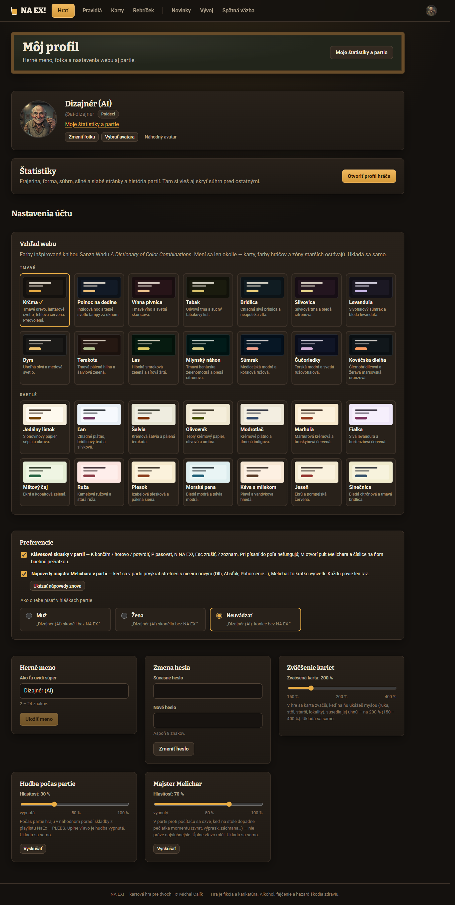

Farba hráča a piktogramy strachu: ako to bude fungovať
Cieľ: herný stôl /hra (línia a bar starších, pečiatka VYDESENÝ), profil /profil (nová voľba farby), výučba a nápovedy Melichara.
Používatelia: hráč počas partie (rýchlo zistiť, kto sa koho bojí a čo z toho mám), nováčik vo výučbe (pochopiť, prečo sú priazeň a strach „naopak“), hráč v profile (vybrať si farbu a vidieť, čo zmení).
Verdikt. Farbu hráča odporúčam robiť z pohľadu hráča: „ja vždy moja farba“. Každý si v profile vyberie, akou farbou vidí seba, a súper dostane na jeho obrazovke vždy kontrastnú párovú farbu. Súper moju voľbu nevidí. Kolízia tak nikdy nevznikne a farboslepý hráč nikdy nedostane dvojicu, ktorá sa mu zlieva. Pri piktogramoch strachu je pre nováčika bez legendy najzrozumiteľnejšia sada B „Tvár staršieho“. A a D si požičiavajú kvapku a chvenie, ktoré už na stole znamenajú Absťák.
Rub a líc strachu a priazne samotný piktogram nevyrieši. Hráči nechápu prečo je to naopak, nie čo to je. Treba jednu zásadu pre farby (zóna hovorí koľko, farba hráča hovorí koho) a jednu vetu príbehu do výučby: kto sa ťa bojí, uteká sa schovať k súperovi.
Ako to funguje dnes
Snímky línie a baru sú z ukážky stola (1366 × 650, kolo 4, Jano proti Botovi Rapavému Ferovi), ktorú nafotil UI dizajnér. Profil som odfotil pri 1366 px. Farby hráčov sú dnes pevné: ty tyrkysová--ja #5cc0cf, súper tehlová--su #e0805f (apps/web/src/schemy.css:37–39). Každý sa vidí tyrkysovo, takže model „ja vždy moja farba“ už v hre funguje, len s jedinou farbou. Na tokeny --ja/--su sa odvoláva 136 miest, z toho 96 v hra/hra.css.
Línia pri 1366 (2×). Starosta sa bojí teba (čip „bojí sa teba“ je tyrkysový), no pečiatka VYDESENÝ má farbu --cervena-text #e5735c. Od súperovej tehlovej sa takmer nelíši (ΔE 9), takže vyzerá ako „súperova“. Marker má tehlový lem, lebo priazeň má súper. Na jednej karte sú tak dve farby hráčov a nič nevysvetľuje, prečo.Bar starších. Strach z teba je tu zelený „+1 / +3“ s ohorkom, v línii tyrkysový. Ten istý význam má na dvoch miestach dve rôzne farby. Zelená (--zelena) a súperova tehlová sú pri deuteranopii takmer rovnaké (ΔE 10).

Profil dnes (1366). Voľba farby hráča chýba. Panel Vzhľad webu dokonca sľubuje: „Mení sa len okolie — karty, farby hráčov a zóny starších ostávajú“ (Ucet.tsx:482–483). Herné meno je opísané ako „Ako ťa uvidí súper“, schéma sa ukladá sama. Tieto dva vzory určujú, kam farba patrí.
Signály z playtestov a spätnej väzby
„Prebytkom ich posúvam k súperovi. Starší sa potom bojí mňa […] Súper dostane jeho ‚priazeň‘, malý bonus. Prečo je to takto otočené, neviem vysvetliť.“ — hráčka 1, výučba playtest/vyucba-20261024-155610/hrac1/feedback.md
„Súper dostane jeho priazeň (malý bonus), ja body za strach. Priazeň a strach si trochu pletiem.“ — hráč 2, tá istá výučba (hrac2/feedback.md:9)
„Dvojitý význam ‚k súperovi / k sebe‘ pri Pohoršení (kto má priazeň, kto strach) zmätie nováčika.“ — playtest/20261027-105422-3/hrac2/feedback.md
„Poštárka v oranžovej dala súperke +2 cigarety — nevšimol som si, že priazeň je pre ňu výhoda.“ — playtest/20261012-101447/hrac1/feedback.md
Opačný signál: „Po prvej bitke som z neho bez pravidiel pochopila, komu starší prejavuje priazeň a koho sa bojí (pečiatka ‚VYDESENÝ‘, stupnica ◀ ty / Jano ▶)“ (spätná väzba #74). Podobne: „karty starších s tým, kto sa koho bojí (pekné, pochopil som to hneď)“ (#65). Sledovateľ hodnotí konzistenciu známkou 8: „‚ty‘ vždy vľavo/modrá“ (playtest/20261011-101224/sledovatel/hodnotenie.md).
Záver zo signálov: hráč, ktorý už pár bitiek odohral, stav na stole prečíta. Nováčik vo výučbe zlyhá na dôvode, prečo sú priazeň a strach rozdelené. Stabilná kotva „ja = moja farba“ je to, čo dnes funguje, a návrh ju nesmie rozbiť. Pozor, všetky citáty sú od AI playtesterov. Ľudia sa k tejto téme v spätnej väzbe zatiaľ nevyjadrili.
Audit použiteľnosti
Závažnosť podľa Nielsena 0–4 (4 = katastrofa). Rozdiely farieb ΔE sú CIELAB 76; farbosleposť som simuloval podľa Machado 2009 (závažnosť 1,0), tou istou maticou ako UI návrh. Prah „rozlíšiteľné“ som stanovil na ΔE ≥ 40 vo všetkých troch videniach. Je to odhad, nie norma.
#
Problém
Heuristika
Záv.
Dôkaz
Koho, ako často
P1
Pečiatka VYDESENÝ hovorí opak. Je vždy v --cervena-text #e5735c, takmer zhodnej so súperovou tehlovou #e0805f (ΔE 9, pri deuteranopii 2). Keď je starší vydesený z teba, pečiatka vyzerá ako súperova. Všetky ostatné farby na karte pritom znamenajú „hráč, o ktorom čip hovorí“ (hra.css:5574).
Každý pri vydesení, čo je výherná podmienka. Pri 4 vydesených je to najdôležitejší stav partie.
P2
Rub a líc bez príbehu. Hráč vie, že priazeň má súper a strach on, ale nevie prečo. Pravidlo si preto pamätá namiesto toho, aby ho pochopil, a v Pohoršení „k sebe / k súperovi“ sa pomýli.
Zhoda so svetom, rozpoznanie namiesto pamätania
3
3 citáty vyššie; výučba prva-hra.json:800 („Čím viac sa ťa bojí, tým viac pomáha druhému!“, bez dôvodu)
Nováčikovia, 2 z 2 hráčov výučby 2026-10-24
P3
Strach nemá znak (U1 v UI návrhu). Priazeň má ♥, strach nesie len text, farba a ohorok.
Rozpoznanie namiesto pamätania
3
Starsi.tsx:90–96, snímka baru
Všetci, v každom kole
P4
Studené farby sa pri farbosleposti zlievajú. Chrpová a fialová majú pri protanopii ΔE 3, tyrkysová a malinová 15. Keby si farbu volili obaja a obaja ju videli, dvojica sa často nerozlíši. Bezpečne sa od celej studenej skupiny odlišuje len tehlová.
Asi 8 % mužov (deuteranomália a protanomália, odhad z literatúry). Týka sa len modelu identity.
P5
Súperova tehlová patrí do rodiny zón. Od červenej zóny ju pri deuteranopii delí ΔE 20, od oranžovej 32 (kontrast 1,01 : 1, U6 v UI návrhu). Tehlová pečiatka súpera teda môže vyzerať ako „červená zóna“.
Prevencia chýb, prístupnosť
2
schemy.css:39, geometria.ts:120
Všetci pri pohľade na stupnicu, farboslepí výrazne
P6
Ten istý strach má dve farby: v bare zelenú, v línii tyrkysovú. Zelená inde znamená „dobré / plus“.
Konzistencia
2
Snímka baru, Starsi.tsx:88–96
Všetci
P7
Kvapka a chvenie už majú význam. Ikona Absťáku je „prázdny pohárik v trasúcej sa ruke“ s kvapkou a čiarami chvenia. Sady A (kvapky) a D (chvenie, mláčka) by sa s ňou plietli, v krčme navyše kvapka = pálenka.
Konzistencia, zhoda so svetom
2
hra/Panely.tsx:71–79
Všetci, Absťák je na doske stále
P8
Nápoveda pri prvom strachu chýba. Melichar vysvetlí priazeň, keď je starší na tvojej polovici (napovedy.json:185), a vydesenie (:222). Častejší prvý zážitok, keď sa ťa starší začne báť po vyhratej bitke, vysvetlený nie je.
Pomoc a dokumentácia
2
packages/core/data/vyucba/napovedy.json
Každý nováčik po prvej vyhratej bitke
P9
Farbu si nemožno vybrať a profil tvrdí, že farby hráčov ostávajú. Ide o novú požiadavku, nie o chybu.
Kontrola a sloboda
1
Ucet.tsx:482–483
Všetci, ktorí chcú hrať „svojou“ farbou
1 · Piktogramy strachu: čo pochopí nováčik bez legendy
Hodnotím len zrozumiteľnosť, vzhľad patrí UI dizajnérovi. Kľúčová otázka znie, čo si človek pomyslí pri 20 px na stole, kde už sú ♥, ohorok, poldeci, Absťák a cigareta. Odhady v tabuľke treba overiť 5-sekundovým testom (pozri otázky do playtestu).
Sady z UI návrhu: 1 Znepokojenie · 2 Strach · 3 Vydesenie (28 px a 16 px)
A · Kvapky potu
Odhad bez legendy: „voda? pálenka? krv?“
B · Tvár staršieho
Odhad: „bojí sa, viac, panika“
C · Vlasy dupkom
Odhad: „klobúk, starší… a čo s ním?“
D · Kolená
Odhad: „nohavice? trasie sa, Absťák?“
Kritérium použiteľnosti
A Kvapky
B Tvár
C Vlasy
D Kolená
Význam „strach“ bez legendy (emoji ako 😟 😨 😱 pozná každý)
slabý
silný
stredný
slabý
Stupňovanie 1 → 3 bez legendy (výraz, počet)
počet
výraz + počet
2 px klobúka
tvar nôh
Kolízia so znakmi, ktoré už na stole sú
kvapka = Absťák, pálenka
žiadna
žiadna
chvenie = Absťák
Čí je to stav? Tvár patrí staršiemu, nie hráčovi.
nejasné
jasné
jasné
jasné
Prenos do vety „starší sa bojí teba“
„potí sa“
„bojí sa“
„ježia sa mu vlasy“
„trasú sa mu kolená“
Poradie pre nováčika (odhad)
3
1
2
4
Odporúčam B, rovnako ako UI dizajnér. Z pohľadu použiteľnosti preto, že výraz tváre je jediný znak, ktorý nováčik prečíta bez učenia. Kvapky v B sú už len doplnok, ktorý počtom zodpovedá špakom. D je vtipnejšia a hodí sa ako ilustrácia do výučby alebo na pečiatku momentu, nie ako 16 px znak stavu.
Rieši B rub a líc? Len spolu so zásadou farieb
Piktogram povie, čo starší cíti. Rub a líc je však otázka, ku komu to cíti a komu prejavuje priazeň. Dnes sú na jednej karte dve farby hráčov (lem markera = priazeň, čip strachu = strach) a vzťah k nim nesie len text. Navrhujem pevnú zásadu pre celý stôl:
Zóna hovorí koľko, farba hráča hovorí koho, symbol hovorí ako.
Žltá / oranžová / červená = sila 1 / 2 / 3, vždy s tvarom (výraz tváre, počet kvapiek). Farba hráča sa nikdy nezobrazí bez symbolu vzťahu: ♥ = „má jeho priazeň“, tvár = „bojí sa ho“. Výnimkou je pečiatka VYDESENÝ, ktorá je vždy na stupni 3. Farba zóny by tam nič nepridala, preto má atrament hráča, ako chce Michal.
Na karte staršieho tak vždy stoja dva čipy a čítajú sa ako jedna veta: „♥ Fero · bojí sa teba · +2 po tvojej výhre“. Farba mena (Fero tehlovo, teba tyrkysovo) je až tretí nositeľ informácie.
Ako to naučiť: tri vrstvy
Výučba (krok i-strach)
Pridať príbeh, ktorý dnes chýba. Texty výučby sú Michalove, preto len návrh vety: „Kto sa ťa bojí, uteká sa schovať k súperovi. Preto má súper jeho priazeň a ty jeho strach. Jedna minca, dve strany.“ K tomu ukážka mince (nižšie), ktorá sa pri posune markera raz otočí.
Nápoveda Melichara (nová)
Spúšťač: prvý starší, ktorý sa bojí teba (marker prvýkrát na súperovej polovici v zóne 1–3). Je to zrkadlo nápovedy priazen (napovedy.json:185). Návrh: „{starsi} sa ťa bojí, tak sa schoval k súperovi a ten má jeho priazeň. Po každej bitke, ktorú vyhráš, ti dá {n} špaky. Nie je to láska, ale aj to sa počíta.“
Legenda na požiadanie
Klik alebo ťuk na piktogram či ♥ otvorí legendu „? stupnica“ (LiniaStarsich.tsx:295–316), nielen hover. Riadok slovníka Strach (slovnik.ts:59) dostane piktogram B a vetu o úteku k súperovi. Rovnakú mincu použijú aj pravidlá (Ukazky.tsx:250).
Drôtený model: minca do výučby a legendy
líc ♥ Fero
⇄
rub bojí sa teba
Melichar: „Starosta sa ťa zľakol, tak utiekol k Ferovi pod krídla. Fero má jeho priazeň, ty jeho strach. Za strach ti po vyhratej bitke dá špaky.“
2 · Farba hráča v profile
Kto čiu farbu vidí: tri modely
Kritérium
P · „Ja vždy moja farba“ (odporúčam)
I · Identita (súper vidí moju farbu)
H · Hybrid (súper svojou, ak sa nebije)
Ako to funguje
Na mojej obrazovke som ja vo svojej farbe a súper v párovej farbe k nej. Súper si to isté robí u seba.
Každý má jednu farbu a vidia ju obaja. Pri zhode sa jeden prefarbí.
Ja vo svojej farbe, súper v svojej, ak sa od mojej dosť líši. Inak dostane párovú.
Kolízie
nikdy, dvojica je pevná
pri zhode aj pri CVD dvojiciach (P4), treba pravidlo, kto ustúpi
riešené na mojej obrazovke, každý môže súpera vidieť inak
Farbosleposť
každá dvojica overená vopred
z 5 farieb prejdú len dvojice s tehlovou
podobne ako I, väčšina dvojíc spadne na párovú
Učenie, kotva
„ja = moja farba“ platí v každej partii
súper má v každej partii inú farbu, „ja“ tiež môže ustúpiť
ja stabilne, súper sa mení
Sociálna hodnota
súper moju voľbu nevidí
„Fero je fialový“
čiastočná
Náročnosť
malá až stredná: nastavenie klienta ako schéma, server len uloží
stredná: farba súpera v viewFor, rozhodca kolízií, náhrady
stredná
Odporúčam model P. Hra je striktne pre dvoch na dvoch obrazovkách, takže nikto „spoločnú“ farbu nepotrebuje. Rozhodujú dva dôvody. Prvý: dnešná kotva „ty vždy tyrkysová“ funguje (sledovateľ, #74), a model P ju zachová, len si ju hráč sám vyberie. Druhý: pri dvoch voľných farbách sa väčšina dvojíc pre farboslepého zleje. Na model I by tak doplatil práve hráč, ktorému má farba pomáhať. Voľby farby súpera sa netýkajú skrytej informácie. Server by ju v modeli I smel poslať, len to nič nezlepší.
Ktoré farby smú byť „moje“: minimálne ΔE (normálne, deuteranopia, protanopia)
tyrkysová
chrpová
fialová
purpurová
tehlová
tyrkysová #5cc0cf
–
29
22
16
44
chrpová #7b9cf0
29
–
3
10
73
fialová #b38be8
22
3
–
7
73
purpurová #d36ad6
16
10
7
–
71
tehlová #e0805f
44
73
73
71
–
Hodnoty sú pre tmavé schémy a slúžia ako príklad pre UI dizajnéra, ktorý odtiene doladí. Zamietol som malinovú (#e77fb3, od tyrkysovej 15, od sivej zóny 23), mätovú a zelenú (zelená znamená „plus“, ΔE 27), kostenú (od sivej zóny 16), jantárovú (akcent a žltá zóna) a žltú, oranžovú a červenú (zóny). Všetky „moje“ farby majú kontrast nad 6 : 1 voči --plocha. Svetlé schémy potrebujú tmavší variant, podobne ako dnes --ja #006a77.
Pravidlo páru: ak je moja farba studená (tyrkysová, chrpová, fialová, purpurová), súper je tehlový. Ak si vyberiem tehlovú, súper je tyrkysový. Prehodenie je jediný prípad, keď hráč uvidí súpera vo „svojej starej“ farbe. Mikrocopy ho na to vopred upozorní.
Tok nastavenia
Dnes
Hráč sa farbu zmeniť nedá.
Profil tvrdí „farby hráčov ostávajú“.
Po návrhu (2 kroky, bez uloženia)
Profil → Nastavenia účtu → Vzhľad webu → Tvoja farba v partii (hneď pod schémami, lebo ide o to, ako vidíš ty; nie pri hernom mene, ktoré „uvidí súper“).
Klik na farbu. Náhľad mini-stola sa prefarbí okamžite a farba sa uloží sama, ako schéma (Ucet.tsx:271–277).
Z partie: legenda „? stupnica“ a ponuka nastavení dostanú odkaz „Zmeniť svoju farbu“ na /profil#farba.
Predvolená farba je tyrkysová a súper ostáva tehlový, takže hráčovi, ktorý nič nezmení, sa nezmení nič. Farbu si pamätá účet (rovnako ako schému), takže platí na každom zariadení. Návštevník bez účtu má predvolenú farbu.
Drôtený model: Profil → Vzhľad webu → Tvoja farba v partii (interaktívny)
Tvoja farba v partii
Takto sa v partii uvidíš ty: tvoja doska, tvoje čipy, pečiatka staršieho, ktorý sa ťa bojí. Súper dostane farbu, ktorá sa od tvojej vždy dobre líši. Súper si partiu farbí po svojom a tvoju farbu nevidí. Ukladá sa samo.
Skús, ako to vidí:
Starosta +3 po tvojej výhre
portrét
Vydesenýz teba
◀ tyFero ▶
Fero · priazeň sily 3
bojí sa teba · Vydesenie
Hrobár +3 po Ferovej výhre
portrét
Vydesenýz Fera
◀ tyFero ▶
ty · priazeň sily 3
bojí sa Fera · Vydesenie
Jano ty · obranca
Fero súper · útočník
Ty: tyrkysová. Súper: tehlová.
Prístupnosť voľby: natívne rádiové tlačidlá vo fieldset s legend, ako voľba „Ako o tebe písať“ (Ucet.tsx:538–547). Každá farba má meno, nie iba vzorku, a cieľ má výšku aspoň 44 px. Zmenu náhľadu ohlási aria-live="polite". Zvolená voľba sa okrem farby líši aj rámikom a bodkou rádia.
Čo keď sa farby zrazia
V modeli P sa farby hráčov nezrazia nikdy. Dvojica „moja + párová“ je pevná a overená aj pre farboslepých.
Zrážka so zónami: zo „svojich“ farieb sú vylúčené žltá, oranžová a červená. Ostáva len dnešná tehlová, ktorá je blízko zón (P5). Preto pečiatka a čipy nesú vždy aj slovo („z teba / z Fera“) a symbol. Farba zóny sa nikdy nepoužije ako farba hráča a naopak.
Zrážka so sémantikou: zelená „+“ a červená „−“ nesmú byť farbou hráča. Strach v bare (P6) má byť vo farbe hráča s piktogramom, nie zelený, ako navrhuje aj UI návrh (Starsi.tsx:88–96).
Farebná schéma webu: farba hráča musí mať kontrast aspoň 3 : 1 (grafika) a 4,5 : 1 (text) na --plocha v každej schéme. Preto potrebuje tmavý a svetlý variant, ako dnešné --ja. Overiť sa to dá rovnako ako farby grafu známok, ktoré prešli validátorom palety (schemy.css:11).
Mimo stola
Kde všade sa farba použije, rozhoduje UI návrh. Z pohľadu použiteľnosti platí jedno pravidlo: „moja farba“ smie označovať len mňa, keď sa pozerám ja. Graf priebehu partie v DetailPartie (profil.css:474–507) a prehrávač teda farbia mňa mojou farbou. Na cudzom profile /hrac/:id však majiteľ profilu nesmie dostať moju farbu, inak by som v ňom videl seba. Tam ostanú neutrálne predvolené farby.
3 · Riziká
Riziko
Prečo
Zmiernenie
Mätenie farby hráča so zónou
Pečiatka VYDESENÝ v súperovej tehlovej leží na portréte hneď nad červenou krajnou zónou stupnice (ΔE 20 pri deuteranopii). Dnes je pečiatka červená, takže hráči môžu mať naučené „červená pečiatka = červená zóna“.
Na pečiatke slovo „z teba / z Fera“ a piktogram B3. Atrament nikdy nie je zóna. Zóna je len na stupnici a v piktograme čipu.
Dve farby hráčov na jednej karte
Lem markera má farbu majiteľa priazne, čip strachu a pečiatka farbu toho, koho sa starší bojí. Pri každom vydesenom staršom sú tak na karte obe farby. To je správne, lebo ide o rub a líc, no vyžaduje to vysvetlenie.
Zásada „farba vždy so symbolom“ (♥ alebo tvár) a minca vo výučbe. Overiť otázkou v playteste (nižšie).
Kognitívna záťaž
Počet farieb na stole sa nezvýši, mení sa len odtieň. Nová je iba jedna voľba v profile.
Predvolená farba ostáva rovnaká a voľba je nepovinná. V partii sa nič nenastavuje.
Stará kotva „modrá = ja“
Kto si vyberie tehlovú, uvidí súpera tyrkysovo, teda vo farbe, ktorú mal doteraz za svoju.
Mikrocopy pri voľbe: „súper bude tyrkysový“. Odhad: týka sa málokoho.
Pravidlá a obrázky
Ukážky v pravidlách (Ukazky.tsx) a snímky vo výučbe ukazujú tyrkysovú. Hráč s fialovou si ich nespojí so sebou.
N1 · Pečiatka VYDESENÝ: veľká, atramentom toho, koho sa bojí, a so slovom „z koho“
rýchla výhra · prvýnáročnosť: malárieši P1, P5
Pred
Hráč vidí červenú pečiatku (0,6 rem).
Z farby nevie, či je vydesený z neho, alebo zo súpera. Červená navyše pripomína súpera.
Musí čítať malý čip pod stupnicou.
Po
Hráč vidí veľkú pečiatku s tvárou B3 a nápisom VYDESENÝ · z teba v tvojej farbe, alebo z Fera v súperovej.
Kto, aký stav a čia je výhoda, prečíta jedným pohľadom aj bez farby.
Mikrocopy: pečiatka „VYDESENÝ“ / „z teba“ alebo „z {meno}“. aria-label: „Starosta je vydesený z teba. Po tvojej výhre ti dá 3 špaky, priazeň má Fero.“ Dnes je tam len text „vydesený“ (LiniaStarsich.tsx:421).
Prístupnosť: farba je až tretí nositeľ (slovo, tvár). Animácia dopadu pečiatky sa nespustí pri prefers-reduced-motion. Ohlásenie hrozby vydesenia už existuje (role="alert", HernaPlocha.tsx:4312).
Súbory:hra/LiniaStarsich.tsx:421, hra/hra.css:5406–5420 (triedy .moja/.superova už existujú, len nemajú štýl). Ide aj bez N3, s dnešnými --ja/--su.
Ako overiť: v playteste sa po prvom vydesení opýtať „Z koho je Starosta vydesený a čo z toho máš?“. Úspech: aspoň 9 z 10 správnych odpovedí bez otvorenia legendy.
N2 · Jeden znak strachu (B) a zásada „zóna = koľko, farba = koho, symbol = ako“
náročnosť: strednárieši P3, P6, P7
Pred
Strach z teba je v bare zelený „+1 ohorok“, v línii tyrkysový text, na nástenke slovo „starší“.
Hráč si musí pamätať, že zelené +1 = strach.
Po
Všade rovnaká tvár B v zóne (koľko), vedľa nej meno alebo „teba“ vo farbe hráča (koho).
Priazeň vždy ♥ a hneď za ňou strach, takže rub a líc stojí vedľa seba.
Implementačný plán je v UI návrhu piktogramov (komponent IkonaStrachu, línia, bar, nástenka). UX dopĺňa dve veci: (1) zelené „+n“ v bare nahradiť farbou hráča a piktogramom a (2) čipy priazne a strachu stavať vždy ako vetu „♥ X · tvár bojí sa Y · +n po výhre Y“.
Ako overiť: 5-sekundový test (pozri otázky) a v partii počet otvorení legendy „? stupnica“ za kolo. Ak by po zmene neklesol, znak nepomohol.
N3 · Moja farba v profile: model „ja vždy moja farba“
odporúčané riešenie úlohy 2náročnosť: strednárieši P4, P9
Tok, drôtený model a mikrocopy sú v časti 2 vyššie. Zhrnutie:
5 farieb: tyrkysová (predvolená), chrpová, fialová, purpurová, tehlová. Každá má meno.
Súper je na mojej obrazovke vždy v párovej farbe (tehlová, pri tehlovej tyrkysová) a moju voľbu nevidí.
Miesto: Profil → Vzhľad webu → „Tvoja farba v partii“, ukladá sa samo, s náhľadom mini-stola. Z partie vedie odkaz „Zmeniť svoju farbu“.
Text v paneli Vzhľad webu sa zmení na: „Mení sa len okolie — karty a zóny starších ostávajú. Svoju farbu v partii si vyber nižšie.“
Súbory (odhad): nový lib/farbyHraca.ts (zoznam ako lib/schemy.ts), schemy.css (tokeny --ja/--su podľa data-farba na <html>, rizikový zdieľaný súbor), public/schema.js (nastaviť pred vykreslením), stranky/Ucet.tsx (voľba), /api/profil (uložiť pole farba). Do jadra ani do viewFor nezasahuje.
Ako overiť: 3 ľudí požiadať „nastav si fialovú“ so štartom na /hra a merať čas a slepé uličky (cieľ: pod 30 s, bez hľadania v hlavičke). Po partii sa opýtať „Mal si niekedy pocit, že súper je ty?“.
N4 · Rub a líc: príbeh do výučby, nová nápoveda a minca v legende
náročnosť: malá (texty) až stredná (minca)rieši P2, P8
Pred
Výučba: „Čím viac sa ťa bojí, tým viac pomáha druhému!“, bez dôvodu.
Prvý strach z teba po vyhratej bitke Melichar nevysvetlí.
Legenda len pri hoveri alebo kliku na „? stupnica“.
Po
Výučba pridá vetu: „Kto sa ťa bojí, uteká sa schovať k súperovi.“
Nová nápoveda strach pri prvom staršom, ktorý sa bojí teba.
Klik alebo ťuk na tvár či ♥ otvorí legendu s mincou.
Texty výučby a Melichara píše Michal, vety vyššie sú len návrh. Nápoveda je dátová zmena v packages/core/data/vyucba/napovedy.json (vzor: priazen, :185–196).
Ako overiť: výučba s 2 AI nováčikmi a vo feedbacku otázka „Prečo má súper priazeň staršieho, ktorý sa bojí teba?“. Dnes 0 z 2 vedelo dôvod, cieľ je 2 z 2 vlastnými slovami.
Ak Michal chce, aby farba bola značkou hráča („Fero je vždy fialový“), dá sa to postaviť na N3 bez prerábania. Server pošle súperovu voľbu v profile hráča. Na mojej obrazovke ju klient použije len vtedy, keď je jej minimálne ΔE voči mojej farbe vo všetkých troch videniach aspoň 40. Inak súper dostane párovú farbu a malú poznámku „Fero hrá fialovou, u teba je tehlový, aby ste sa nezliali“. Z tabuľky vyššie vyplýva, že pri studených farbách by to nastalo skoro vždy, takže sociálny prínos je malý a cena (rôzne farby súpera v rôznych partiách, vysvetľovanie) veľká.
Plus
Identita a vtip („fialový Fero“).
Súpera spoznáš na prvý pohľad aj v rebríčku.
Mínus
Väčšina dvojíc spadne na náhradu.
Súper má v každej partii inú farbu, takže stratí kotvu.
Viac pravidiel, ktoré treba vysvetliť.
Odporúčané poradie
N1 pečiatka VYDESENÝ s dnešnými farbami. Dá sa nasadiť hneď, nezávisí od ničoho a opravuje stav, ktorý dnes hovorí opak.
N2 znak B naprieč stolom podľa UI návrhu piktogramov, so zásadou farieb z tohto návrhu.
N3 farba v profile spolu s UI návrhom kde všade. Tokeny --ja/--su už sú, takže hlavná práca je profil a validácia kontrastov v 28 schémach.
N4 texty výučby a nápovedy, keď ich Michal napíše. Najlepšie v tej istej dávke ako N2, aby výučba ukazovala nový znak.
N5 len ak Michal výslovne chce identitu farieb.
Otázky
Do playtestu
5-sekundový test znaku (3 ľudia, ak sa dá, inak AI hráči pred partiou): ukázať B1–B3 pri 20 px bez legendy a opýtať sa „Čo znamená tento znak? Ktorý je najsilnejší?“. Úspech: slovo strach, bojí sa alebo zľakol sa a správne poradie.
Rub a líc v partii, v kole 3: „Kto má priazeň Starostu, koho sa bojí a čo z toho bude mať víťaz bitky?“. Sledovať, či hráč odpovedá z karty, alebo otvára legendu.
Farba: „Nastav si fialovú farbu“ so štartom na /hra. Sledovať čas, kde hráč hľadá najprv, a či v partii niekedy zamenil súpera za seba.
Farbosleposť: ak hrá človek s poruchou farbocitu, opýtať sa, či rozlíši svoju farbu od súperovej a od zón.
Na Michala
Má súper vidieť moju farbu? Odporúčam nie (model P): každý vidí seba svojou farbou a súpera v párovej. Ak áno, ide o N5 s náhradami.
Paleta: stačí 5 farieb (tyrkysová, chrpová, fialová, purpurová, tehlová)? Pri ďalších studených farbách treba súpera vždy tehlovo. Teplé farby blízko zón do palety nepúšťam.
Pečiatka „VYDESENÝ · z teba / z Fera“: súhlasíš s doplnkom „z koho“? Bez neho by farba bola jediným nositeľom informácie (WCAG 1.4.1).
Veta do výučby a nová nápoveda „Kto sa ťa bojí, uteká sa schovať k súperovi“: sedí ti príbeh? Texty napíšeš ty.
Boti: majú mať boti (Štamgast, Rapavý Fero, Teta Gizka) vlastnú farbu? Pri modeli P to netreba, súper je vždy v párovej.
Návrh nemení pravidlá hry ani kód. Snímky línie a baru pochádzajú z UI návrhu piktogramov, snímka profilu je z lokálneho servera (účet Dizajnér AI). Pracovné snímky sú v playtest/dizajn/farba-hraca-20261027/ (mimo gitu).